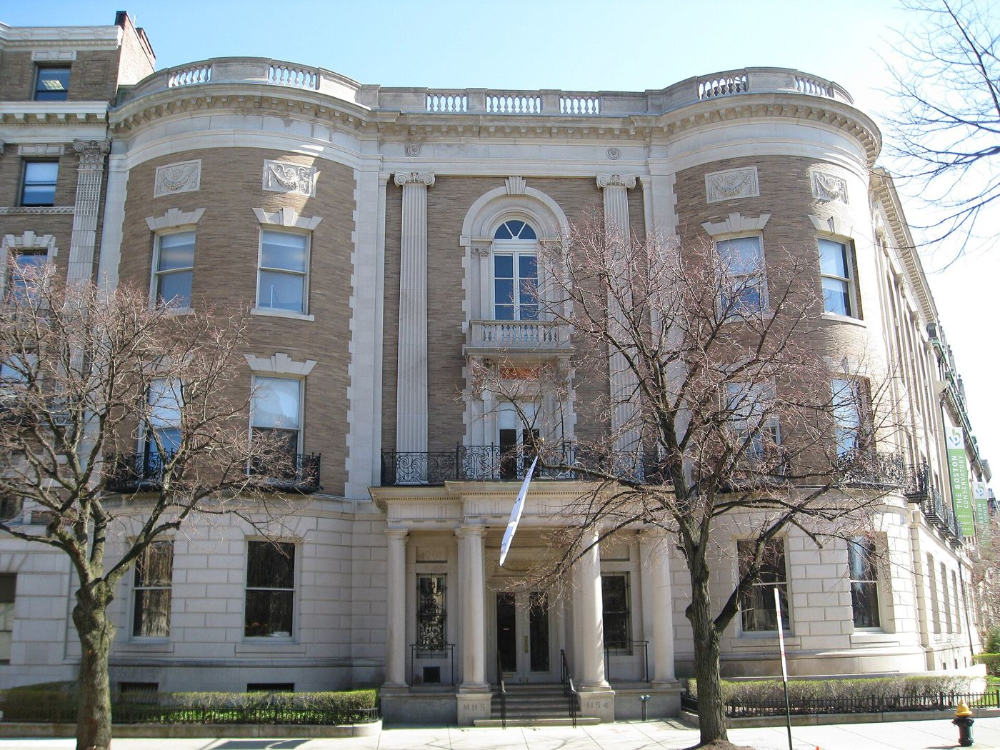

Bibliography
- Massachusetts Soldiers and Sailors of the Revolutionary War, vol. XVI (1907), pp. 131–140 (all Tufts entries). archive.org
- Thomas Bellows Wyman, The Genealogies and Estates of Charlestown, vol. II (1879), pp. 964–965. archive.org
- Alvin Lincoln Jones, Under Colonial Roofs (1894), pp. 128–129. archive.org
- Helen Tilden Wild, Medford in the Revolution (1903), pp. 50, 52, 53. archive.org
- Ellen Chase, The Beginnings of the American Revolution, vol. III (1910), p. 99. archive.org
- Jay Franklin Tufts, Tufts Family History 1633–1963 (secondary source), pp. 28, 35, 37, 139, 143. archive.org
- Sacramento city directories, 1869–1902 (Albert C. Tufts).
- City of Medford, Minute Men monument (1925), photograph.
- Herbert Freeman Adams, comp., Tufts Kinsmen, Vol. II (2012; © 2003), pp. 77, 83, 96, 107–115, 145–151. Private copy; cited with short quotes only, no scans.
- Herbert Freeman Adams, comp., Tufts Kinsmen, Vol. I (2010), pp. 105, 110–112, 116, 119–120, 128–130, 133, 136–137, 141–142, 145, 150, 152–166, 175–181. Cited from an owner-supplied extract with short statements and printed page numbers. The book is not hosted here. Page scans not on file.
- DAR records. Not seen; missing images.
Page Scans
Research Notes
⚑ Unverified
Anne Adams Tufts's death date (Feb. 7 or Feb. 17, 1813) and her father (Quincy or Cambridge).
Full quote table: sources/README.md
Illustrations



Image Credits
Illustrations are public domain or openly licensed, except photographs from The Historical Marker Database (HMdb.org), which are used noncommercially with the attribution its terms require. Each is stored on this site and linked to its source page, which carries the full terms. CC BY-SA images may be reused under the same license.
- Peter Tufts House, Medford, Mass.. Daderot. CC BY-SA 3.0. Wikimedia Commons file page
- Peter and Oliver Tufts House, Somerville, Mass.. Swampyank. CC BY-SA 3.0. Wikimedia Commons file page
- Royall House, Medford, Mass. (1920). Leon H. Abdalian (via Boston Public Library / DPLA). Public domain. Wikimedia Commons file page
- Isaac Royall House, east (front) facade. Daderot. CC BY-SA 3.0. Wikimedia Commons file page
- Dr. Cotton Tufts, by Benjamin Greenleaf (1804). Benjamin Greenleaf. Public domain. Wikimedia Commons file page
- Charles Tufts, about 1860. Hale’s Photograph Rooms / Edwin B. Rollins. Public domain. Wikimedia Commons file page
- Dorchester Heights Monument, South Boston. Jet Lowe (HABS/HAER, Library of Congress). Public domain. Wikimedia Commons file page
- Old Powder House, Somerville, Mass.. Daderot. CC0. Wikimedia Commons file page
- Prospect Hill Monument, Somerville, Mass.. Daderot. CC0. Wikimedia Commons file page
- The Battle of Lexington, April 19, 1775 (Doolittle, Plate I). Amos Doolittle after Ralph Earl. Public domain. Wikimedia Commons file page
- The Battle of Bunker’s Hill, June 17, 1775 (Trumbull). John Trumbull. Public domain. Wikimedia Commons file page
- Surrender of General Burgoyne at Saratoga, October 17, 1777 (Trumbull). John Trumbull. Public domain. Wikimedia Commons file page
- A Narrative of the Life … of Henry Tufts (1807), title page. Samuel Bragg Jr., printer. Public domain. Wikimedia Commons file page
- Farmington Falls, Maine (postcard, 1907). Unknown (1907 postcard). Public domain. Wikimedia Commons file page
- Fort Independence, Castle Island, South Boston. Paul Keleher. CC BY 2.0. Wikimedia Commons file page
- Cradock House, Riverside Ave., Medford (about 1895–1905). Unknown photographer (via DPLA). Public domain. Wikimedia Commons file page
- Granary Burying Ground, Boston. Ceoil. Public domain. Wikimedia Commons file page
- Fort on Noddle’s Island, 1776. Unknown draftsman (Library of Congress). Public domain. Wikimedia Commons file page
- Noddle’s Island and Chelsea Creek, 1775 map detail. J. De Costa. Public domain. Wikimedia Commons file page
- Medford Square, postcard about 1913. Unknown (postcard). Public domain. Wikimedia Commons file page
- Medford Square and station, early 1900s. Unknown photographer. Public domain. Wikimedia Commons file page
- Medford, Massachusetts, 1880 (bird’s-eye view). O. H. Bailey & Co.; C. H. Brainard, agent (Library of Congress). Public domain. Wikimedia Commons file page
- The Mystic River near Medford. Daderot. CC0. Wikimedia Commons file page
- Lexington Battle Green. Dudesleeper. CC BY 2.5. Wikimedia Commons file page
- Old North Bridge, Concord. Cbaile19. CC0. Wikimedia Commons file page
- The Engagement at the North Bridge in Concord (Doolittle, Plate III). Amos Doolittle (photo: Daderot). Public domain. Wikimedia Commons file page
- Saratoga Battlefield, Freeman’s Farm. Nsausa. CC BY-SA 4.0. Wikimedia Commons file page
- West Point on the Hudson, about 1780. Unknown artist (National Archives). Public domain. Wikimedia Commons file page
- The Siege of Rhode Island, 1778 (print of 1779). Unknown engraver. Public domain. Wikimedia Commons file page
- Battle of White Plains, plan (1796). D. Martin. Public domain. Wikimedia Commons file page
- The Attack against Fort Washington, November 16, 1776. Thomas Davies. Public domain. Wikimedia Commons file page
- Newburgh and Snake Hill from Fishkill Landing, about 1860–1870. E. & H. T. Anthony (NYPL). Public domain. Wikimedia Commons file page
- Topsham, Maine, from Mason Street, about 1865–1880. G. W. Barnes (NYPL). Public domain. Wikimedia Commons file page
- The Burning of Charlestown, June 17th, 1775. NYPL Emmet Collection. Public domain. Wikimedia Commons file page
- Tufts College, about 1854. Unknown artist. Public domain. Wikimedia Commons file page
- Continental frigate Alliance passing Boston Light, 1780. Matthew Parke (U.S. Naval History and Heritage Command). Public domain. Wikimedia Commons file page
- Commodore John Barry. V. Zveg after Gilbert Stuart (U.S. Navy). Public domain. Wikimedia Commons file page
- Cape Town, late 18th century (Samuel Davis). Samuel Davis (Yale Center for British Art). CC0. Wikimedia Commons file page
- St. George’s, Bermuda (1614). Capt. John Smith. Public domain. Wikimedia Commons file page
- Gen. Horatio Gates (Gilbert Stuart). Gilbert Stuart (Metropolitan Museum of Art). CC0. Wikimedia Commons file page
- Gen. Henry Knox (after Gilbert Stuart). After Gilbert Stuart (Detroit Institute of Arts). Public domain. Wikimedia Commons file page
- Gen. Philip Schuyler (John Trumbull). John Trumbull. Public domain. Wikimedia Commons file page
- Gen. John Burgoyne (Joshua Reynolds). Joshua Reynolds. Public domain. Wikimedia Commons file page
- The Isaac Royall Family (Robert Feke, 1741). Robert Feke. Public domain. Wikimedia Commons file page
- Abigail Adams (Benjamin Blyth, 1766). Benjamin Blyth (Massachusetts Historical Society). Public domain. Wikimedia Commons file page
- John Adams (John Singleton Copley, 1783). John Singleton Copley (Harvard Art Museums). Public domain. Wikimedia Commons file page
- George Washington (Charles Willson Peale, 1776). Charles Willson Peale (Brooklyn Museum). Public domain. Wikimedia Commons file page
- A View of Houses in the City of Albany (1789). Library of Congress Prints & Photographs. Public domain. Wikimedia Commons file page
- Boston and the country adjacent, 1775 (De Costa map). J. De Costa. Public domain. Wikimedia Commons file page
- First Church in Weymouth. Magicpiano. CC BY-SA 4.0. Wikimedia Commons file page
- Hotel Bucklen, Elkhart, Indiana (1863–1880s). Unknown photographer. Public domain. Wikimedia Commons file page
- Yankeetown, Ohio. Aesopposea. CC BY-SA 3.0. Wikimedia Commons file page
- Town Hall, Lee, New Hampshire. Bostonian13. CC BY-SA 3.0. Wikimedia Commons file page
- Old Salem Jail, St. Peter Street, about 1908. Unknown (postcard). Public domain. Wikimedia Commons file page
- Halifax, Nova Scotia, looking down Prince Street (1764). James Mason after Dominic Serres (Library of Congress). Public domain. Wikimedia Commons file page
- Plan of Fort William Henry and camp at Lake George. W. Eyre and I. Heath. Public domain. Wikimedia Commons file page
- Fort Ticonderoga from Mount Defiance. Mwanner. CC BY-SA 3.0. Wikimedia Commons file page
- Massachusetts Historical Society, Boston. Biruitorul. Public domain. Wikimedia Commons file page
- Map of Michigan, 1831 (David H. Burr). David H. Burr. Public domain. Wikimedia Commons file page
- Washington before Boston medal (1776). P. S. B. Duvivier (via DPLA). Public domain. Wikimedia Commons file page
- Anne Adams Tufts, “from an oil painting” (published 1912). Unknown engraver, from an oil painting (Green & Green, 1912). Public domain. Wikimedia Commons file page
- Portrait of Anne Adams Tufts (artist and date unknown). Portrait courtesy of the family / FamilySearch. Artist and date unknown. FamilySearch Family Tree page
- DAR tablet to Anne Adams-Tufts (1909), close-up. Photographed by Marc Posner, April 8, 2024. By Marc Posner, HMdb.org. Used with attribution under HMdb.org terms (noncommercial). The Historical Marker Database page
- Anne Adams-Tufts marker, Paul Revere Park, Somerville. Photographed by Marc Posner, April 8, 2024. By Marc Posner, HMdb.org. Used with attribution under HMdb.org terms (noncommercial). The Historical Marker Database page
- Anne Adams-Tufts marker behind the Paul Revere / Winter Hill Fort marker. Photographed by Marc Posner, April 8, 2024. By Marc Posner, HMdb.org. Used with attribution under HMdb.org terms (noncommercial). The Historical Marker Database page
- A Plan of the Town of Boston … in 1775 (Lieut. Page, publ. Faden 1777). Thomas Hyde Page; William Faden (Library of Congress gm71000620). Public domain. Wikimedia Commons file page
- A Plan of Boston in New England with its Environs (1777). Map from NYPL (Hades-118256-54202); crop by Fabartus. CC BY 3.0 (crop); original map public domain. Wikimedia Commons file page
- A Chart of the Harbour of Boston (Des Barres, 1775). Joseph F. W. Des Barres (Library of Congress 75693436). Public domain. Wikimedia Commons file page
- Alford Street Bridge and the Mystic River Elevated Bridge, 1918. Boston Elevated Railway (City of Boston Archives). Public domain. Wikimedia Commons file page
- Alford Street Bridge, raised (2024). 4300streetcar. CC BY 4.0. Wikimedia Commons file page
- Alford Street Bridge (2025). 4300streetcar. CC BY 4.0. Wikimedia Commons file page
- Broadway on Winter Hill, Somerville (2024). 4300streetcar. CC BY 4.0. Wikimedia Commons file page
- Salem Street Burying Ground, Medford. Magicpiano. CC BY-SA 4.0. Wikimedia Commons file page
- A Plan of the Town of Medford, surveyed 1794 by Peter Tufts Junr. Peter Tufts Jr. (surveyor); Massachusetts Archives. No known copyright restrictions. Digital Commonwealth item page
- Plan of Charlestown Peninsula, “from accurate survey by Peter Tufts Junr. Esqr.” (1818). Peter Tufts Jr. (surveyor); Annin & Smith, engravers. No known copyright restrictions. Digital Commonwealth item page
- French Model 1763 Charleville musket (lock detail), Smithsonian NMAH 1980.0399.0856. The Smithsonian Institution, National Museum of American History. Public domain. Wikimedia Commons file page
- Tower Brown Bess India Pattern musket, Smithsonian NMAH AF*NM215. The Smithsonian Institution, National Museum of American History. Public domain. Wikimedia Commons file page


_facade.JPG){kind=link}


_-_general_view.jpg){kind=link}

_-_DSC04318.JPG){kind=link}


.jpg){kind=link}


.jpg){kind=link}

.jpg){kind=link}

.jpg){kind=link}


.png){kind=link}


.jpg){kind=link}


_-_H74_-_Harvard_Art_Museums.jpg){kind=link}


_DH_Burr.jpg){kind=link}

.jpg){kind=link}

.jpg){kind=link}


.png){kind=link}


Find a Grave Photo Credits
These photographs belong to the Find a Grave contributors named, are stored on this site, and link to the memorial where each appears.
- Dr. Cotton Tufts, Find a Grave memorial photo. Photo: aladdinsane85, Find a Grave
- Dr. Cotton Tufts, Find a Grave memorial photo. Photo: Paula Mine, Find a Grave
- Tufts family tomb slab, Salem Street Burying Ground, Medford. Photo: BobBoston, Find a Grave
- Gravestone of Caleb Tufts, Packer Cemetery, West Mystic, Conn.. Photo: Joanna Case, Find a Grave
- David Tufts, Western Burial Ground, Lynn, Mass.. Photo: Laurie Moran, Find a Grave
- Tomb 109, Granary Burying Ground, Boston. Photo: Adrian Thierry, Find a Grave
- Medford minute men memorial boulder. Photo: Doug Bates, Find a Grave
- Gravestone of Lieut. William Tufts, Salem Street Burying Ground, Medford. Photo: BobBoston, Find a Grave
- Stone of Hannah Tufts, widow of Joseph Tufts, Medford. Photo: BobBoston, Find a Grave
- Gravestone of Samuel Tufts, Salem Street Burying Ground, Medford. Photo: BobBoston, Find a Grave
- Stones at the grave of James Tufts, Salem Street Burying Ground, Medford. Photo: BobBoston, Find a Grave
- Gravestone of Ebenezer Tufts, Salem Street Burying Ground, Medford. Photo: BobBoston, Find a Grave
- Gravestone of Jonathan Tufts, Salem Street Burying Ground, Medford. Photo: BobBoston, Find a Grave
- Gravestone of Samuel Tufts 2d, Salem Street Burying Ground, Medford. Photo: BobBoston, Find a Grave
- Peter Tufts (the immigrant), Bell Rock Cemetery, Malden. Photo: Wendy Roberts, Find a Grave
- Peter Tufts (the immigrant), Bell Rock Cemetery, Malden. Photo: Suzanne, Find a Grave
- Peter Tufts (the immigrant), Bell Rock Cemetery, Malden. Photo: The Guardian, Find a Grave
- Peter Tufts of Winter Hill, Phipps Street Burying Ground, Charlestown. Photo: Swangirl, Find a Grave
- Charles Tufts, portrait dated 1836. Photo: John “J-Cat” Griffith, Find a Grave
- Charles Tufts monument, Mount Auburn Cemetery. Photo: Eric Thomsen, Find a Grave